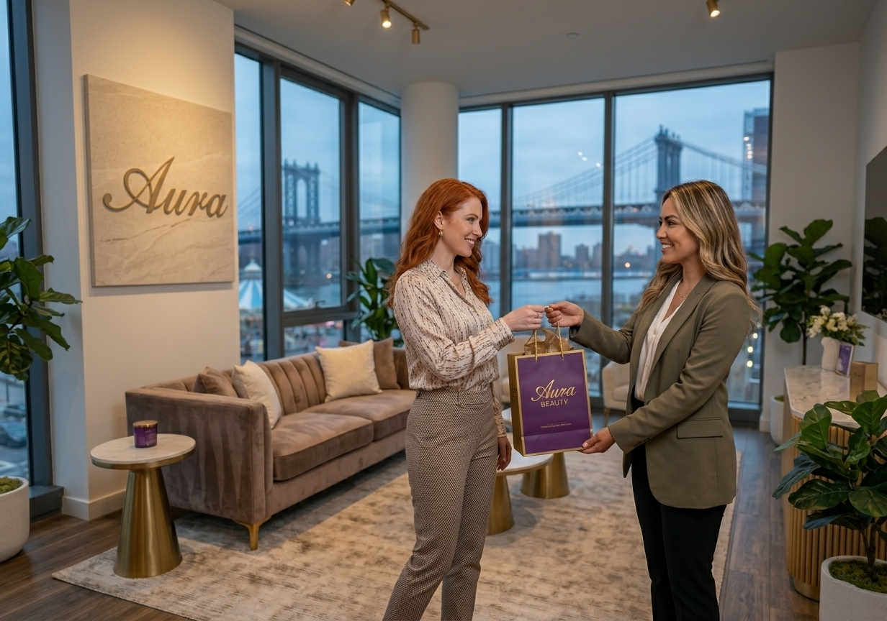

Chapter 02 — How It Works
The MassaPro Ecosystem Advantage — IVR + AI Agent + AI Guru + AI Analytics + Flow
MassaPro
IVR
Face-to-face video
over the service point
over the service point
AI Agent
Autonomous chat & voice. Resolves simple needs; escalates complex ones to a video advisor with full context.
AI Guru
RAG co-pilot for the advisor. Live sentiment, coaching prompts & CSAT recommendations during the session.
AI Analytics
Every session transcribed, sentiment-scored, PII-redacted. Live dashboards & executive trends.
MassaPro Flow
Drag-and-drop orchestration across channels. Kiosk → AI Agent → advisor → supervisor, no context lost.

One platform. Every channel.
AI and human, orchestrated together. No standalone telepresence vendor can match this.
5 modules · 1 platform